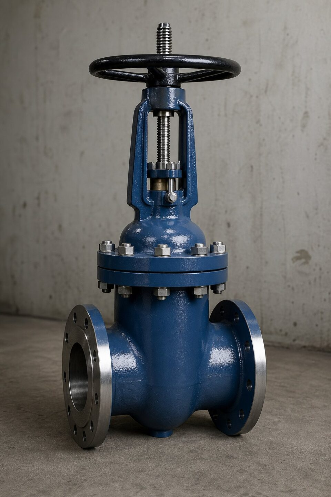

شیر دروازهای چیست؟
شیر دروازهای با حرکت عمودی یک دیسک گوهای یا موازی، مسیر جریان را باز یا بسته میکند. در حالت باز، مسیر جریان کاملاً مستقیم و بدون مانع است و افت فشار بسیار کمی ایجاد میشود. به همین دلیل، انتخاب اول برای قطع و وصل کامل خطوط انتقال و فرایندی است. عملکرد آن چنددورهای است؛ یعنی برای باز و بسته شدن کامل به چندین دور چرخش نیاز دارد.

انواع دیسک و گوه
| نوع | ویژگی | کاربرد |
|---|---|---|
| گوه صلب | یکپارچه و ساده | سرویسهای عمومی با شرایط پایدار |
| گوه منعطف | شیار محیطی برای انعطاف | جبران ناهمراستایی حرارتی؛ رایجترین |
| گوه دوبخشی | دو صفحه با مکانیزم مرکزی | سرویسهای نیازمند آببندی دوطرفه |
| موازی کشویی | دو صفحه موازی با فنر | خطوط انتقال و سرویسهای فشار بالا |
انتخاب نوع گوه به دمای کاری، سیکلهای حرارتی و الزامات آببندی بستگی دارد.
انواع ساقه و بونت
- ساقه رو: با حرکت ساقه، وضعیت باز و بسته از بیرون مشخص است؛ مناسب نصبهایی که مشاهده وضعیت مهم است.
- ساقه نهفته: فضای عمودی کمتر؛ مناسب چاهکها و فضاهای محدود.
- بونت پیچی: رایج برای کلاسهای متوسط؛ قابل باز شدن برای تعمیر.
- بونت جوشی: بدون نشتی خارجی؛ برای سرویسهای حساس.
- بونت فشار قوی: برای کلاسهای بسیار بالا؛ هرچه فشار داخلی بیشتر، آببندی محکمتر.
استانداردهای حاکم
| استاندارد | دامنه کاربرد |
|---|---|
| استاندارد شیر دروازهای فولادی | شیرهای فولادی سایز متوسط و بزرگ با بونت پیچی |
| استاندارد شیرهای خط انتقال | شیرهای تمامعبور خطوط انتقال نفت و گاز |
| استاندارد شیر سایز کوچک | شیرهای فورج سایز کوچک فشار بالا |
| استاندارد تست شیرآلات | معیارهای تست نشتی بدنه و نشیمنگاه |
ذکر استاندارد ساخت در استعلام، مبنای بازرسی و پذیرش است.
معیارهای انتخاب
- نوع سرویس: فقط قطع و وصل؛ برای تنظیم دبی مناسب نیست.
- افت فشار: در حالت باز، حداقل افت فشار در میان شیرآلات.
- سایز و کلاس: در سایزهای بزرگ و کلاسهای بالا، اقتصادیترین گزینه قطع کامل.
- متریال و تریم: هماهنگ با سیال و دما؛ برای سرویسهای ساینده یا خورنده تریم مناسب انتخاب شود.
- فرکانس عملکرد: برای قطع و وصلهای مکرر، گزینههای سریعتر مناسبترند.
خرابیهای رایج و عیبیابی شیر دروازهای
شیرهای دروازهای با وجود سادگی ساختار، الگوی خرابی مشخصی دارند که بیشتر آنها به کندی پیشرفت میکند و با پایش ساده قابل شناسایی است. رایجترین مشکل، نشتی در وضعیت بسته است که میتواند از فرسایش یا خط افتادن روی سطوح نشیمن، گیر کردن ذرات خارجی بین دیسک و نشیمن یا دفرمگی جزئی اجزا ناشی شود. اگر نشتی تدریجی افزایش یافته، معمولا فرسایش علت است و اگر ناگهانی ظاهر شده، احتمال گیر کردن ذره خارجی بیشتر است؛ در حالت دوم، گاهی چند بار باز و بسته کردن کامل شیر، مشکل را بدون تعمیر حل میکند. مشکل دوم، سخت شدن یا گیر کردن حرکت ساقه است که ریشههای مختلفی دارد: تورم یا فرسودگی پکینگ، خوردگی رزوههای ساقه در شیرهای با ساقه بیرونی، یا رسوبگذاری در ناحیه بونت. در شیرهایی که سالها بیحرکت ماندهاند، گیر کردن معمولا ترکیبی از خوردگی و رسوب است و باید با حوصله و بدون اعمال نیروی ناگهانی آزاد شوند. سوم، آسیبهای مکانیکی مانند خم شدن ساقه یا شکستن زبانه دیسک است که معمولا از اعمال گشتاور بیش از حد یا ضربه قوچ ناشی میشوند و علامت آنها، حرکت بدون تغییر وضعیت قطع است. در عیبیابی، ابتدا مرز مشکل را مشخص کنید: آیا مشکل از مکانیزم حرکت است یا آببندی؟ سپس بر اساس علائم، تصمیم بین تعمیر جزئی، سنگزنی نشیمن یا تعویض گرفته شود. در توقفهای تعمیراتی، بازرسی داخلی سطوح نشیمن و ثبت وضعیت فرسایش، مبنای تصمیمهای آینده خواهد بود و شیرهایی که این بازرسی را دارند، عمر قابل پیشبینیتری دارند.
جمعبندی
شیر دروازهای برای قطع و وصل کامل با افت فشار حداقلی، انتخاب کلاسیک و مطمئن خطوط صنعتی است. با تعیین دقیق نوع گوه، ساقه، متریال و استاندارد ساخت، خریدی متناسب با سرویس انجام دهید.
سوالات رایج
آیا میتوان از شیر دروازهای برای تنظیم دبی استفاده کرد؟
خیر؛ طراحی آن برای قطع و وصل کامل است. کارکرد نیمهباز باعث ارتعاش دیسک، سایش نشیمنگاه و آسیب آببندی میشود. برای تنظیم دبی باید از شیرهای کنترلی مناسب استفاده کرد.
تفاوت ساقه رو و ساقه نهفته چیست؟
در نوع ساقه رو، با چرخش دسته، ساقه به بیرون حرکت میکند و وضعیت شیر از دور قابل تشخیص است؛ در نوع ساقه نهفته، ساقه حرکت محوری ندارد و فضای کمتری نیاز است. انتخاب به فضای نصب و نیاز به مشاهده وضعیت بستگی دارد.
شیر دروازهای برای چه سرویسهایی مناسبتر است؟
خطوط نیازمند قطع و وصل کامل با افت فشار حداقلی، خطوط انتقال، و سرویسهایی که عبور ابزارک پاکسازی خط لازم است. برای تنظیم یا قطعهای مکرر، گزینههای دیگر مناسبترند.
چرا در سایزهای بزرگ از شیر دروازهای استفاده میشود؟
ساختار ساده، قابلیت ساخت در سایزهای بزرگ، افت فشار کم در حالت باز و هزینه مناسب نسبت به گزینههای همرده، آن را برای خطوط بزرگ انتقال اقتصادی میکند.
مطالب مرتبط
- مقایسه شیر توپی و دروازهای
- مقایسه شیر کروی و دروازهای
- استاندارد شیر دروازهای فولادی (API 600)
- استاندارد شیر دروازهای سایز کوچک (API 602)
- راهنمای طراحی گوه منعطف در شیر دروازهای
در استعلام شیر دروازهای، سایز، کلاس فشاری، متریال بدنه و تریم، نوع گوه، ساقه رو یا نهفته و استاندارد ساخت را مشخص کنید. برای سرویس ترش یا دمای بالا، شرایط سرویس را ذکر کنید.
مشاهده صفحه محصول ← ثبت RFQ همین محصولتامین این تجهیزات را به پیشرو تجهیز فرتاک بسپارید
شرکت پیشرو تجهیز فرتاک تامینکننده تخصصی تجهیزات صنعتی برای پروژههای نفت، گاز، پتروشیمی، فولاد و نیروگاهی است. برای دریافت پیشنهاد فنی و قیمت، استعلام (RFQ) خود را ثبت کنید تا کارشناسان مهندسی فروش در کوتاهترین زمان پاسخ دهند.
- تامین شیرآلات صنعتیشیر دروازهای، توپی، کروی و یکطرفه با گواهی مواد
- تامین تجهیزات پایپینگلوله، فلنج و اتصالات مطابق مدارک پروژه